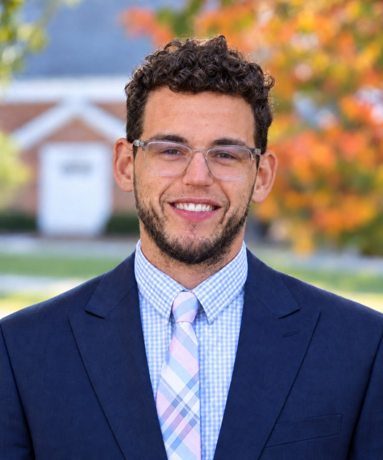

People
The Vascular Stress Physiology and Resilience Laboratory.
Principal Investigator

Nathaniel D. M. Jenkins, PhD, FAHA
Director, VSPR Lab
Nathaniel Jenkins, PhD, FAHA, is an Associate Professor of Kinesiology and Population Health Sciences, a faculty member of the UW Cardiovascular Research Center and the Wisconsin Nathan Shock Center, and directs the Vascular Stress Physiology and Resilience (VSPR) Lab. He completed his PhD in 2016 and spent a total of 10 years at Oklahoma State University (Health and Human Performance and Nutritional Sciences; 4 years) and the University of Iowa (Health and Human Physiology and Psychological and Brain Sciences; 6 years) as an Assistant and Associate Professor.
His lab studies how psychosocial and environmental stressors, including adverse childhood experiences, shape blood vessel health across the lifespan. By pairing human vascular physiology, cellular and mitochondrial biology, and behavioral observation and manipulation, the lab examines what drives cardiometabolic disease risk in high-risk populations before disease becomes clinically apparent. The lab measures stress, sleep, dietary behavior, and physical activity as everyday lifestyle-related exposures that shape vascular and metabolic function, and also manipulates these experimentally to test causal mechanisms in humans.
This research is currently supported by the NIH (NHLBI/NIA) and the American Heart Association. Jenkins is a Fellow of the American Heart Association, a Consulting Editor for the American Journal of Physiology–Heart and Circulatory Physiology, and a Standing Member of the NIH Center for Scientific Review’s Biological Processes and Social-Ecological Factors Study Section.
Lab members
-
Gavin Power, PhD
Postdoctoral Fellow
-
Manoela Lima Oliveira, PhD
Postdoctoral Fellow
-
Laura Schwager, BA
Research Associate
-
Mark Flores
PhD Candidate
-
Kylee West
PhD Candidate
-
Sequoia Ernst
MS Student
Alumni
Former members of the lab.
- Nile Banks, PhDAssistant Professor, Maynooth University, Ireland
PhD 2023, then postdoc with Bill Schrage at UW–Madison
- Emily Rogers, PhDClinical Affairs Lead, Neuromod, Dublin
PhD 2023, then postdoc with Bill Schrage at UW–Madison
- Nathaniel Helwig, MSMS 2023
- Anna Zucker, MSMS Student
- Alexander Berry, BSResearch Assistant
- Thomas Hart, JrUndergraduate Research Assistant
- Preston EngstromUndergraduate Research Assistant
- Isabel JennessUndergraduate Research Assistant
- Jacob VenengaUndergraduate Research Assistant
- Justin AlpersUndergraduate Research Assistant
- Sydni SchulteUndergraduate Research Assistant